시나리오 형상관리를 사용할 때 다음과 같은 효과를 기대 합니다.
- 개발 시 시나리오 관리 용이
- 시나리오 변경이력 관리
- 시나리오 유실 가능성 줄어듬
형상관리 On/Off 및 설정은 리본 메뉴 Tools > Options > Configuration Management > Config 에서 설정 할 수 있습니다.
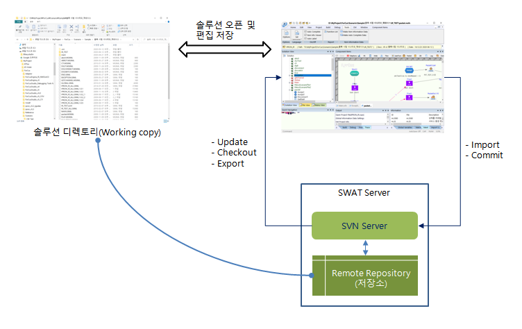
- SCE에서 시나리오가 솔루션 단위로 오픈 및 처리되기 때문에 형상관리도 솔루션 단위로 처리를 합니다.
※ SVN Server는 SWAT 팩키지 설치시 같이 설치 되며 SVN사용자 추가 및 Repository(저장소) 생성/설정이 되어있고 SVN Server가 시작 되어 있어야 합니다.
형상관리 할 시나리오를(솔루션) 오픈합니다.
- 오픈한 시나리오가 형상관리중인 시나리오가 아니면 형상관리 기능 메뉴 중 Repository browser, Import, Settings 메뉴만 활성화 됩니다.(형상관리 중인 시나리오면 Import 메뉴는 비활성화 됩니다)
+ Repository browser : 원격 저장소 주소를 알고있으면 저장소를 탐색할 수 있습니다.
+ Import : 형상관리 할 시나리오를 최초 한번 원격 저장소에 업로드 합니다.(형상관리 여부 체크를 하기 때문에 버튼이 활성화 되는데 약간의 지연이 있을 수 있습니다.)
+ Settings : Import하기 전에 형상관리에서 제외할 파일 또는 폴더 등을 설정 합니다.
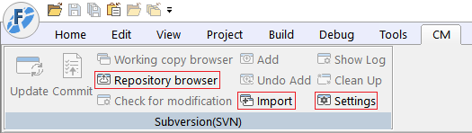
형상관리를 사용하기 위해서는 기능을 켜야 합니다.
- 리본 메뉴 Tools > Options > Configuration Management > Config 에서 Configuration Management On/Off 체크 박스를 체크하면 됩니다.
형상관리 할 시나리오를 SVN 서버의 저장소로 업로드(Import) 합니다.
- Import 전에 형상관리 하지 않을 파일 또는 폴더를 지우거나 제외 파일로 설정(Settings)할 수 있습니다.
- Import 할 때는 오픈된 프로젝트가 없어도 솔루션 디렉토리 하위의 모든 파일을 업로드 합니다.(제외로 설정한 파일 제외)
2.3.1. 리본 메뉴 CM > Subversiond(SVN) > Settings 버튼 눌러서 제외되는 디렉토리, 파일 확인 및 설정
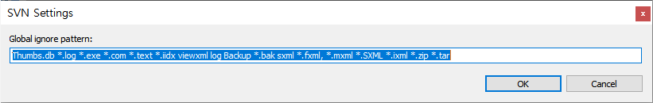
2.3.2. 리본 메뉴 CM > Subversiond(SVN) > Import 버튼 누르기
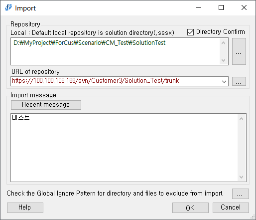
Import 창이 팝업 되면 "Repository 그룹 Local : Default local reposi.." 에서 형상관리 할 디렉토리를 확인하고 Directory Confirm 체크 박스를 체크 합니다.
그리고 "Repository 그룹 URL of repository"에 원격 저장소 URL을 입력합니다.
마지막으로 Import Message를 입력후 OK버튼을 누르면 Import가 시작됩니다.(파일 개수가 많을 수록 Import시간이 오래 걸립니다.)
♣ 생성한 SVN 계정으로 완전 처음으로 Import등 SVN 서버를 접속해야 하는 경우에는 인증 창이 팝업 될 수 있는데 계정과 패스워드를 입력하면 됩니다.
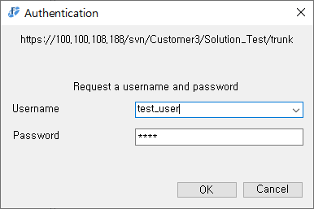
※ 주의 : "Repository 그룹 Local : Default local reposi.." 에 기본적으로 설정되는 디렉토리는 SCE에서 오픈한 솔루션 파일(.sssx)이 있는 디렉토리 입니다.
- 만약 이 솔루션 파일이 여러개 프로젝트 중 특정 프로젝트 디렉토리 안에 있고 솔루션에 소속된 다른 프로젝트가 있는 경우 설정된 디렉토리를 그대로 사용하게 되면 솔루션 파일이 있는 프로젝트만 Import 되고 다른 프로젝트는 안되는 문제가 발생하므로 반드시 Import할 디렉토리를 확인하여 이 같은 경우라면 솔루션에 소속된 프로젝트 및 관련 디렉토리가 모두 포함될 수 있도록 디렉토리를 선택해 주시기 바랍니다.
- Import 대상 디렉토리 및 파일을 Add 하면 화면
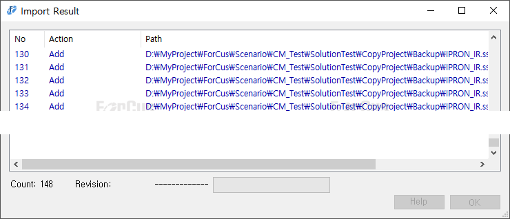
- Add한 파일을 Commit 하는 화면
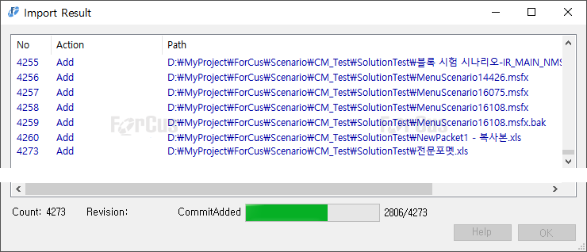
- CommitAdded된 항목중 실제 파일을 SVN서버로 전송하고 Import 완료된 화면(디렉토리가 제외 되므로 Added된 항목 보다 개수가 작음)
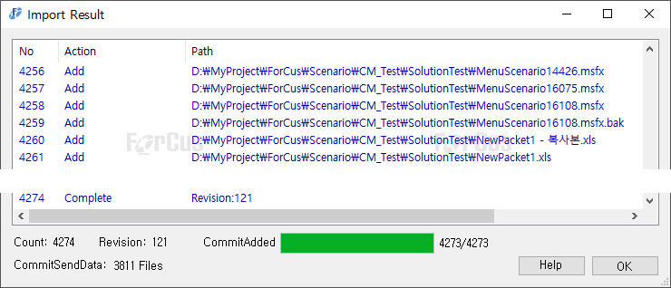
2.3.3. Import 완료
Import 완료된 호면에서 OK버튼을 눌러 창이 닫히면 정상적인 경우라면 Solution View, File View 트리의 항목의 이미지가 SVN상태 이미지로 바뀌는 걸 확인 할 수 있습니다.
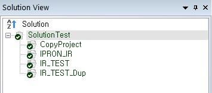
Import가 완료되면 SCE는 주기적으로 형상관리한 로컬 솔루션 디렉토리(Working copy directory)의 파일 상태 정보를 갱신하여 개발자가 수정하거나 추가한 파일들의 상태를 표시합니다.
_3-1.png)
_3-2.png)
[일반 상태] [형상관리 상태]
- 상태별 이미지 및 텍스트 칼라
* Working copy(로컬 솔루션 디렉토리), Repository(원격 저장소)
+  : SVN 상태가 에러일 경우 또는 형상관리 중인 파일이 삭제된 경우
: SVN 상태가 에러일 경우 또는 형상관리 중인 파일이 삭제된 경우
+  : 형상관리 파일이 아님 - Working copy 디렉토리에 새로 생성되거나 복사된 파일.
: 형상관리 파일이 아님 - Working copy 디렉토리에 새로 생성되거나 복사된 파일.
+  : 형상관리 중인 파일 - Working copy 파일과 Repository 파일 내용이 변경 없이 동일함.
: 형상관리 중인 파일 - Working copy 파일과 Repository 파일 내용이 변경 없이 동일함.
+  : 형상관리 파일이 아닌 파일을 형상관리 하기 위해 추가한 상태(Working copy) - Commit하기 전의 파일로 Repository에는 이 파일이 없음.
: 형상관리 파일이 아닌 파일을 형상관리 하기 위해 추가한 상태(Working copy) - Commit하기 전의 파일로 Repository에는 이 파일이 없음.
+  : 형상관리 중인 파일을 삭제한 상태(Working copy) - Commit하기 전의 파일로 Repository에는 이 파일이 있음.
: 형상관리 중인 파일을 삭제한 상태(Working copy) - Commit하기 전의 파일로 Repository에는 이 파일이 있음.
+  : 항목이 교체된 경우(Working copy) - 파일이 교체되면 Deleted, Added 예약이 되는데 파일 이름이 같은 경우에 해당함.
: 항목이 교체된 경우(Working copy) - 파일이 교체되면 Deleted, Added 예약이 되는데 파일 이름이 같은 경우에 해당함.
+  : 파일이 수정 되었음(Working copy) - Commit하기 전의 파일로 Repository의 파일 내용은 수정 전임.
: 파일이 수정 되었음(Working copy) - Commit하기 전의 파일로 Repository의 파일 내용은 수정 전임.
+  : Merge한 파일.
: Merge한 파일.
+  : Update, Commit, Merge등 에서 항목의 속성이 Repository에서 받은 속성과 충돌 - 주로 같은 파일을 여러 명이 편집 하고 Commit 하는 경우에 발생.
: Update, Commit, Merge등 에서 항목의 속성이 Repository에서 받은 속성과 충돌 - 주로 같은 파일을 여러 명이 편집 하고 Commit 하는 경우에 발생.
+  : 리본 메뉴 CM > Subversiond(SVN) > Setting 의 Global ignore pattern에 제외 파일로 설정 또는 Working copy browser의 Add Ignore 를 통해서 제외한 파일.
: 리본 메뉴 CM > Subversiond(SVN) > Setting 의 Global ignore pattern에 제외 파일로 설정 또는 Working copy browser의 Add Ignore 를 통해서 제외한 파일.
※ SCE 가 어떤 처리 중 일 때는 상태 갱신을 하지 않습니다.
- Item Information Data 처리 중 일 때
- Auto Complete Data 처리 중 일 때
- 검색 & 치환 중 일 때
- 빌드 중 일 때
- SVN 기능 처리 중 일 때(Update, Commit, Add, Undo Add 등)
- 기타 작업 중 일 때
4.1. 형상관리 시나리오를 오픈한 경우 가장 먼저 할 일
리본 메뉴 Home > CM(SVN) > Update 또는 리본 메뉴 CM > Subversiond(SVN) > Update 실행 하기
- 시나리오를 Import 하거나 또는 Checkout 으로 받은 시나리오는 형상관리 중인 시나리오입니다.
개발 시에 여러 개발자가 시나리오을 오픈하여 개발을 하게 되는데 수정, 추가, 삭제한 내용을 수시로 Commit하여 SVN Server의 Repository에 업로드 하게 됩니다.
그런데, 같은 파일을 수정 시에 Working copy 디렉토리에 있는 파일을 이미 다른 사람이 수정하여 Commit한 경우에 나중에 이 파일을 Commit하게 되면 충돌이 발생하게 됩니다.
그래서 시나리오 편집 전에 Update 기능을 사용하여 Repository에 있는 가장 최신에 Commit 된 버전의 파일로 Working copy에 있는 파일을 업데이트 하여 수정된 파일을 편집 할 수 있도록 해야 합니다.
※ 주의
- 다른 개발자가 파일을 추가한 경우 SCE 프로젝트 정보에 추가된 정보가 없어서 Solution View, File View 트리에는 표시 되지 않지만 Working copy 디렉토리에는 다운로드 되어 있으므로 해당 파이을 프로젝트에 추가 합니다.
- 파일 이름을 Rename 경우에도 프로젝트 정보는 변경되지 않기 때문에 Solution View, File View 트리에는 이전 파일 이름으로 표시 되고 SVN 상태 정보에는 없기 때문에 None 으로 표시 되는 이 파일을 Remove하고 변경된 파일을 추가 해야 합니다.
4.2. 시나리오 수정, 추가 파일 Repository에 전송하기
시나리오 수정, 시나리오 파일 추가(SVN Add) 한 후에 리본 메뉴 Home > CM(SVN) > Commit 또는 리본 메뉴 CM > Subversiond(SVN) > Commit 을 실행 하여 Repository에 업로드 할 수 있습니다.
4.3. 시나리오 파일(또는 프로젝트 파일) 추가
프로젝트에 시나리오 파일을 새로 생성하거나 추가한 경우 형상관리를 하기 위해서는 Add 해야 합니다.
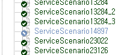
프로젝트에 추가한 ServiceScenario14897 파일이 NotVersioned 상태로 보이는데 Add 대상 파일 입니다.
리본 메뉴 CM > Subversiond(SVN) > Add 를 실행하면 Add 창이 팝업 됩니다.
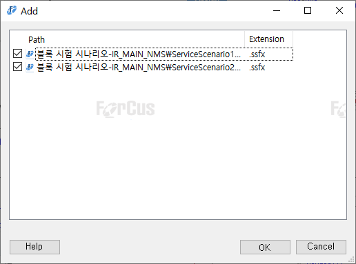
형상관리 중인 Working copy디렉토리 전체에서 Add 대상 파일을 리스팅 하고 처리하지 않을 파일을 선택 해제 할 수 있습니다.
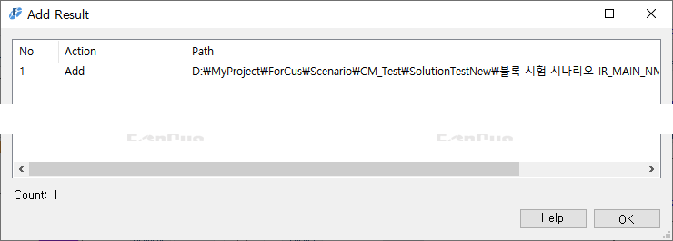
Add 결과 창에 추가된 항목이 있습니다.
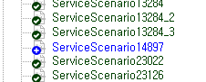
Add 한 후 Solution View Tree에 Added 상태의 파일 ServiceScenario14897 이 보입니다.
리본 메뉴 Home > CM(SVN) > Commit 또는 리본 메뉴 CM > Subversiond(SVN) > Commit 을 실행 하여 Repository에 업로드 합니다.
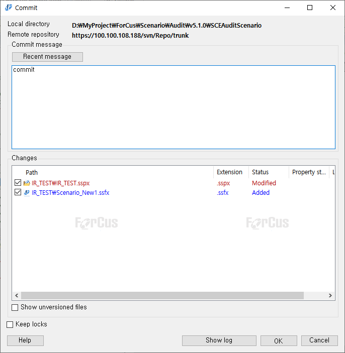
Added 한 항목이 Commit 대상 리스트에 있습니다.
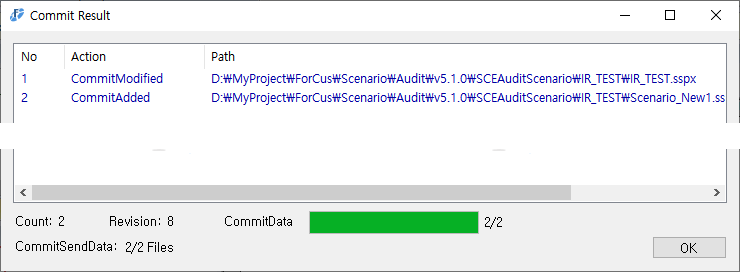
Added 항목을 Commit 한 결과 창 입니다. Repository에 업로드된 상태 입니다.
4.4. 시나리오 파일 이름 변경
SCE Solution View, File View 에서 이름 변경 하고 자 하는 파일 항목에서 마우스 오른 버튼을 누르면 팝업되는 메뉴에서 "Rename File" 메뉴를 선택합니다.
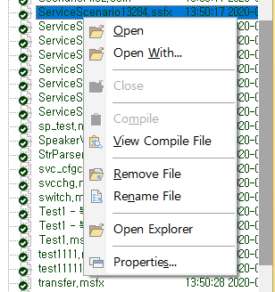
Rename File 은 SVN Rename 과 연동되어 있고 Commit을 하도록 자동으로 Commit 창이 팝업돕니다.
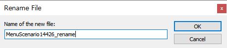
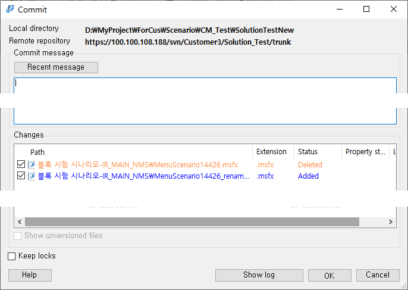
Rename은 대상 파일을 Delete 후에 Add 하는 방식으로 처리 되기 때문에 Commit 대상 리스트에 원본 파일은 Deleted, 이름 변경 파일은 Added 된 것을 볼수 있습니다.
※ 주의 : 같은 시나리오 개발하는 다른 개발자의 경우 Update 하면 Working copy의 파일 이름이 변경되고 SCE 프로젝트 정보의 파일 이름은 이전 파일 이름 그대로이기 때문에 해당 파일을 Remove 하고 새로 추가 해야 합니다.
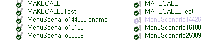
왼쪽은 Rename을 한 개발자의 SCE Solution View Tree 오른 쪽은 같은 시나리오를 개발하는 다른 개발자의 SCE Solution View Tree 이며 오늘 쪽은 파일 이름이 그대로 있고 SVN에는 이 파일이 없기 때문에 SVN 상태가 None 으로 표시 되고 있습니다.
* 만약 Update 조차 하지 않았다면 개발자는 이전 이름의 파일을 계속 편집 하고 Commit 하게 되는데 Repository에 파일이 없기 때문에 Commit 에러가 발생한다.
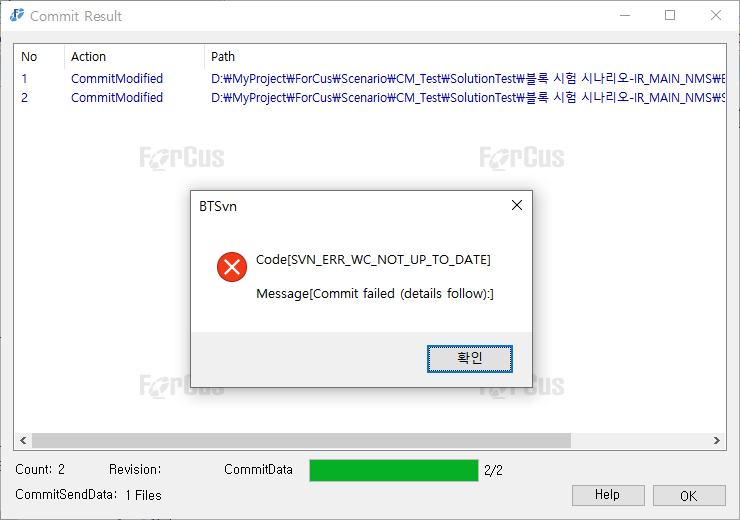
* 또 다른 경우는 Rename하고 Commit 시 에 이전 파일이 Delete 되지 않았다면 서로 다른 파일을 편집 하는 경우가 발생 합니다..
ex) A 개발자가 ServiceScenario13284_2.ssfx 라는 파일을 ServiceScenario13284_rename.ssfx 로 Rename 하고 Commit할 때 Delete된 이전 파일을 Commit 하지 않게 되면 B 개발자는 Update를 해도 이전 파일을 편집하여 Commit 한 후 Repository Browser를 보면 두개 파일이 다 있는 것을 확인 할 수 있습니다.
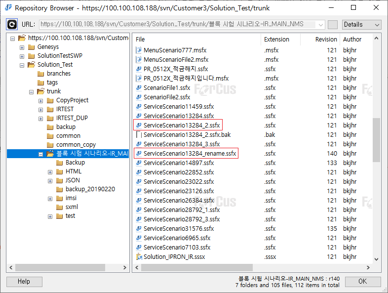
4.4. 시나리오 파일 삭제
SCE 에서 Remove File은 시나리오 프로젝트에서 파일 정보만 제거되고 실제 파일은 삭제 되지 않습니다. 형상관리 중인 파일이면 계속 형상관리 상태입니다.
4.6. Repository 에서 Checkout 받기
형상관리 중인 시나리오를 여러가지 이유로 다시 다운 받을 경우가 생기는데 리본 메뉴 Home > Repo-Browser 또는 리본 메뉴 CM > Subversiond(SVN) > Repository browser 에서 할 수 있습니다.
4.7. 형상관리 사용중 알수 없는 오류로 락이 걸려 기능 동작을 하지 못할 때
- 락이 걸리면 Update, Commit등 아무것도 할 수 없다.
- 락이 걸리는 원인은 여러가지가 있을 수 있는데 Svn 기능 처리 중 작업 취소 등이 한 원인일 수 있습니다.
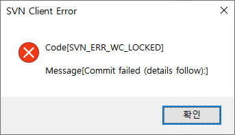
해결 : 리본메뉴 CM > Subversiond(SVN) > Clean Up 버튼을 눌러서 락 걸린 항목을 제거
5.1. SCE 연동 기능
SVN 각 기능은 두번 실행 할 수 없다. 실행 중 이면 해당 버튼은 비 활성화 된다.
- 리본 메뉴 Home > CM(SVN) > Update 또는 리본 메뉴 CM > Subversiond(SVN) > Update
- 리본 메뉴 Home > CM(SVN) > Commit 또는 리본 메뉴 CM > Subversiond(SVN) > Commit
- 리본 메뉴 Home > CM(SVN) > WC-Browser 또는 리본 메뉴 CM > Subversiond(SVN) > Working copy browser
- 리본 메뉴 Home > CM(SVN) > Repo-Browser 또는 리본 메뉴 CM > Subversiond(SVN) > Repository browser
- 리본 메뉴 Home > CM(SVN) > Check-Modi 또는 리본 메뉴 CM > Subversiond(SVN) > Check for modification
- 리본 메뉴 CM > Subversiond(SVN) > Add
- 리본 메뉴 CM > Subversiond(SVN) > Undo Add
- 리본 메뉴 CM > Subversiond(SVN) > Import
Local : 형상관리할 디렉토리를 설정합니다. 기본 값은 SCE 에서 오픈한 솔루션 폴더 입니다.
Directory Confirm Checkbox : Import 할 디렉토리를 확인 했다는 체크 박스로 체크해야 Import 가 처리 됩니다.
URL of repository : Import 할 원격 저장소 URL 주소 입니다.
- 원격 저장소 URL 설명
ex : https://100.100.108.188/svn/Customer3/Solution_Test/trunk
+ https://100.100.108.188/svn : SWAT 장비에 있는 SVN 주소
+ /Customer3 : 고객사
+ /Solution_Test : 솔루션
+ /trunk : SVN 메인 트렁크로 Import하면 이 디렉토리 하위에 솔루션 디렉토리 하위의 디렉토리 파일들이 들어갑니다.(SVN은 branches, tags, trunk 3개로 구성)
Import message : Import 할 때 관련 정보를 입력 하면 어떤 내용으로 Import 되었는지 알 수 있습니다. 값을 입력해야 Import 가 처리 됩니다.
Recent message Button : 이전에 Import 성공한 입력 메시지를 최신 순으로 다시 선택할 수 있도록 제공 합니다.
Check the Global Ignore Pattern for directory and files to exclude from import Button : Import 하기 전 제외 파일을 확인하고 편집 할 수 있습니다.
- 리본 메뉴 CM > Subversiond(SVN) > Clean Up
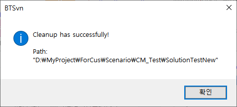
버튼을 누르면 바로 Cleanup이 완료 됩니다.
- 리본메뉴 CM > Subversiond(SVN) > Settings
디렉토리 하위의 항목을 Import, Commit, Add 등의 명령 처리 시 제외 할 디렉토리나 파일 패턴을 입력합니다.
ex) Backup : 백업 이라는 디렉토리 또는 파일 이름은 제외
*.zip : 파일 확장자가 zip 인 파일은 제외
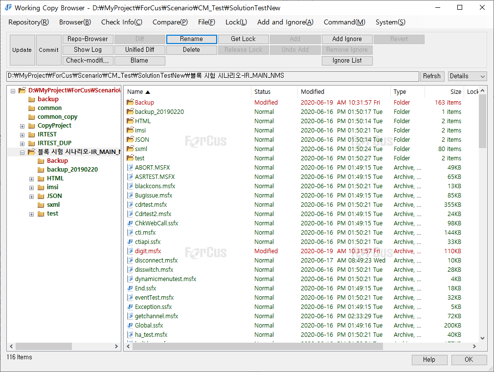
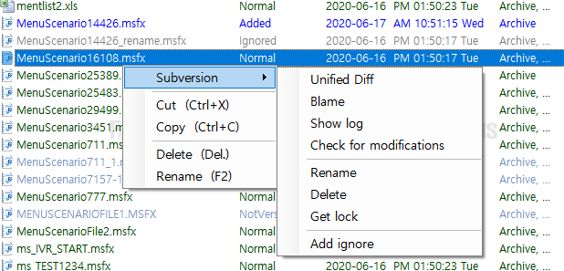
Working copy browser 항목에서 마우스 오른 버튼을 누르면 항목의 상태에 따라서 Subversion 메뉴가 팝업 됩니다.(Working copy browser 에 있는 Subversion 명령 버튼과 동일 기능)
아래 명령에서 (SVN 명령 아님)기능은 윈도우 탐색기와 같이 실제 파일 처리 명령입니다. 형상관리 중인 파일에 대해서는 되도록 Subversion 명령으로 처리 하십시오.
Subversion : SVN 명령
-------------------
Cut (Ctrl+X) : 실제 파일 잘라내기(SVN 명령 아님)
Copy (Ctrl+C) : 실제 파일 복사(SVN 명령 아님)
--------------------
Delete (Del.) : 실제 파일 삭제(SVN 명령 아님), 단 형상관리 중인 항목은 SVN Delete를 합니다.
Rename (F2) : 실제 파일 이름 변경(SVN 명령 아님), 단, 형상관리 중인 항목은 SVN Rename을 합니다.
_Update.png)
Repository 에 수정, 추가, 이름 변경된 최신 Commit된 Revision 파일로 Working copy 디렉토리의 파일을 갱신 합니다.
* 갱신된 내용이 없는 경우 Update 창은 자동 종료 됩니다.
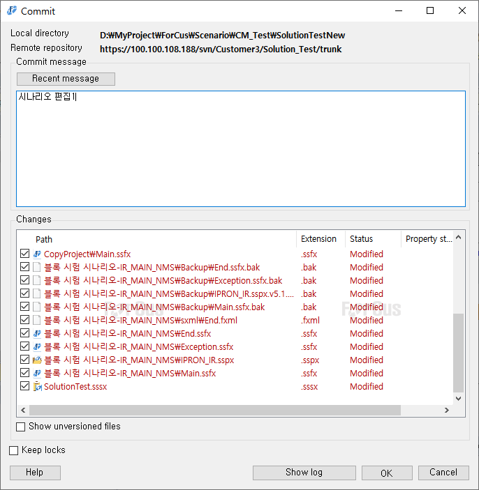
Local directory : 형상관리 중인 Working copy 디렉토리(대부분은 솔루션 디렉토리)
Remote repository : 원격 저장소 URL 주소
Commit message : Commit 시에 시나리오 수정 내용 등을 입력하여 추 후 해당 Revision(Commit 시에 부여되는 관리 번호) 이 어떤 내용이 수정되었는지 알 수 있습니다.
Changes List : Commit 대상 파일 리스트 이며 왼쪽의 체크 박스를 체크하여 대상에서 제외할 수 있습니다.
Show unversioned files Checkbox : NotVersioned 파일을 모두 Changes List에 리스팅 하고 체크 박스로 체크 한 후 Commit 하면 해당 파일을 바로 Add 및 커밋 합니다.
Keep locks Checkbox : 파일에 SVN Lock 을 건 상태에서 Commit 시에 Lock이 풀리는 것을 방지 합니다.
Keep changelists Checkbox : 파일이 수정되면 Changes 리스트에 표시 되는데 Commit 후 이 리스트에서 사라지게 되는 것을 방지 합니다.
Show log Button : Remote repository URL 주소에 해당하는 원격 저장소에 Commit된 Revision 리스트를 볼수 있습니다.
ex) 위 그림에서 처럼 URL 주소 /trunk 에 Commit된 Revision 리스트를 볼수 있습니다.
* 디렉토리를 선택하면 하위의 Commit 대상 파일들이 Changes List 에 리스팅 되고, 파일을 선택하면 선택한 파일만 리스팅 합니다.
* SCE 리본메뉴에서 하는 Commit은 솔루션의 모든 Commit 대상 파일들을 리스팅 합니다.
- 디렉토리 또는 파일이 Commit 된 Revision 번호를 리스팅 하며 각 Revision 별로 상세한 정보를 볼수 있습니다.
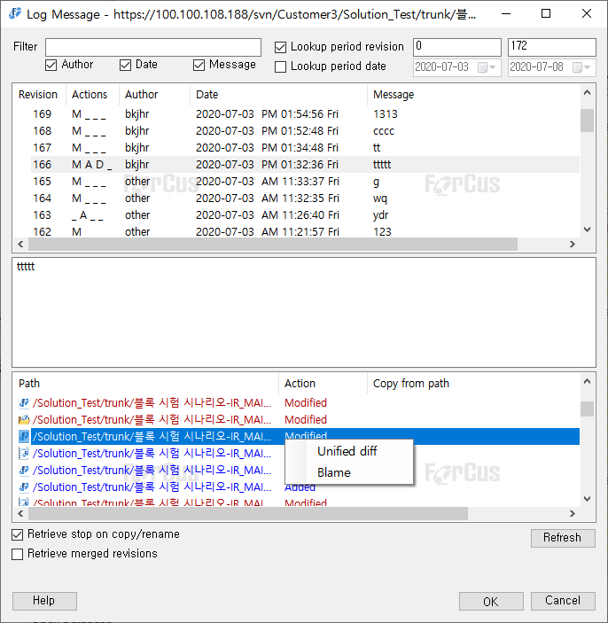
Message Filter : 입력한 값을 리스트에서 Message 항목의 값과 비교하여 같은 문자가 있는 Revison만 리스팅 합니다.
Lookup period revision Checkbox : 지정한 Revision 번호 사이의 Revision을 조회 합니다.
Lookup period date Checkbox : 지정한 날자에 해당 하는 Revision을 조회 합니다.
Revision List : 조회된 Revision 들 을 리스팅 합니다.
Message Box : Revision List 에서 선택한 Revision 이 Commit 될 때 입력한 메시지를 표시 합니다.
Item List : Revision List 에서 선택한 Revision 에 같이 Commit 된 항목 리스트를 리스팅 합니다.
Retrieve stop on copy/rename Checkbox : 복사, 이름 변경이 일어난 지점 까지만 로그를 수집합니다.(해당 branches의 변경 사항 만 표시할 때 유용합니다.)
Retrieve merged revisions Checkbox : Merged Revision 로그를 수집합니다.
Refresh Button : 리스팅 화면을 갱신합니다.
Popup Menu : Item List의 항목에서 마우스 오른 버튼을 누르면 팝업됩니다.
Unified diff : 5.2.7. Unified Diff
Blame : 5.2.8. Blame
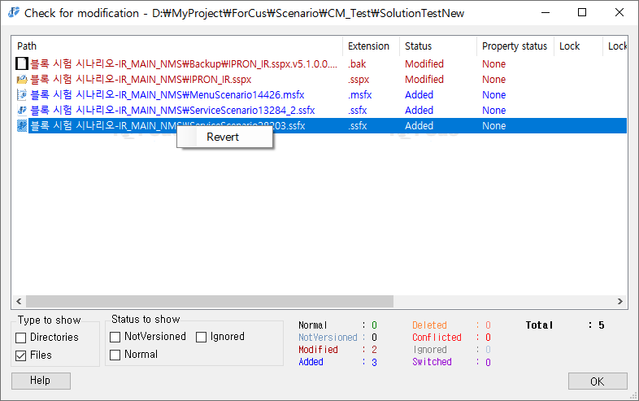
List : Commit 하기 전의 수정된 파일 또는 추가, 삭제 된 파일 리스트 입니다.
Directories Checkbox : 디렉토리를 리스팅 합니다.
Files Checkbox : 파일을 리스팅 합니다.
NotVersioned Checkbox : 형상관리 중이 아닌 파일 리스팅 합니다.
Normal Checkbox : 형상관리 중인 보통 파일을 리스팅 합니다.
Ignore Checkbox : 형상관리 제외 파일을 리스팅 합니다.
Revert Popup Menu : 수정, 추가, 삭제된 파일을 이전 상태로 되돌릴 수 있습니다.
Added 된 항목을 Revert 하면 이전 상태인 NotVersioned 또는 Ignored 상태로 돌아 가고 리스트에서 제거 됩니다.
- 미 지원
- 선택한 파일의 Revision 과 바로 전 Revision 을 비교하여 변경된 부분을 보여 줍니다.
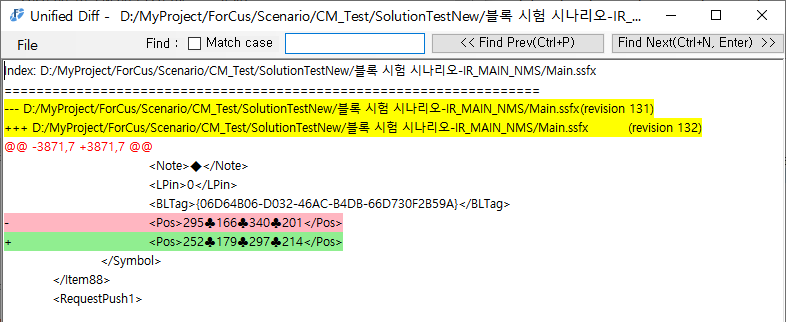
- 제거된 부분, + 추가된 부분 으로 수정된 부분 입니다.(SCE 커맨드 아이템 위치가 변경된 경우)
- 선택한 파일의 각 라인 별로 Commit 된 Revision, 수정 날자/시간, 작성자를 보여 줍니다.
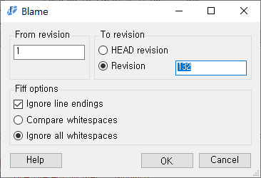
From revision, To revision 은 보여줄 Revision 구간을 설정하며 해당 라인이 이 구간의 Revision이 아니면 -1로 표시 됩니다.
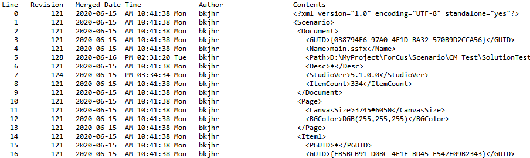
- 형상관리 중인 파일을 대상으로 SVN Rename을 처리 합니다.
* Working Copy Browser 에서 Rename 하면 SCE 는 알지 못하므로 프로젝트에 소속된 파일인 경우에는 SCE Solution, File View 에서 Rename 하시기 바랍니다.
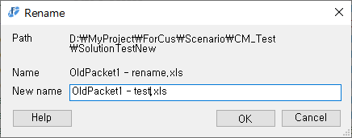
New name에 변경할 이름을 입력 합니다.
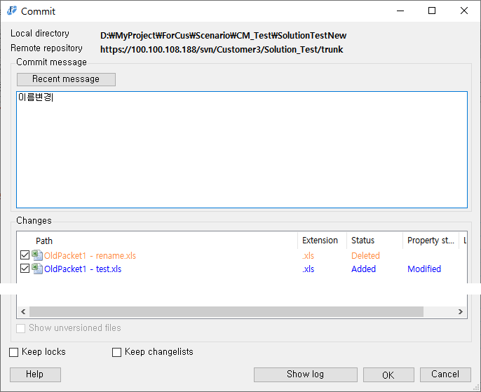
Rename은 이전 파일을 Delete 하고 새 이름의 파일을 Add 하는 구조로 처리 가 됩니다.
- 형상관리 중인 파일을 대상으로 SVN Delete를 처리 합니다.
+ 형상관리 에서 상태가 Deleted 로 바뀌고 Commit 을 하면 파일 상태가 NotVersioned 상태로 바뀜니다.(실제 파일이 삭제 되지는 않고 형상관리 에서만 빠짐니다)
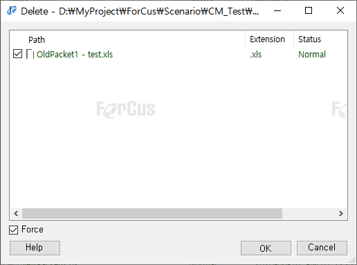
- 형상관리 중인 파일에 락을 걸어서 락은 건 사람이 아닌 다른 사용자가 Commit 할 수 없도록 합니다.
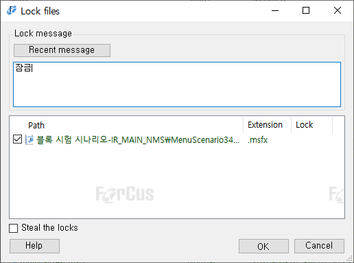
Lock message : 잠금 메시지를 입력 합니다.
Steal the locks : 파일이 잠겨 있는 경우 이전 소유자의 잠금을 해제하지 않고 파일을 잠그고 업데이트 해야 하는 경우 사용 합니다.
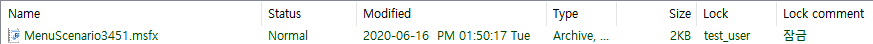
Get Locks 후 리스트 Lock, Lock comment 컬럼에 상태가 표시 됩니다.
- 락을 건 파일을 락 해제 합니다.
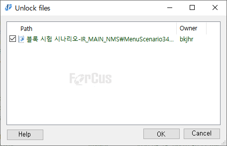
List : Working copy 디렉토리에서 형상관리 파일이 아닌 파일 중에서 Ignored 파일을 제외한 NotVersioned 파일이 대상입니다.
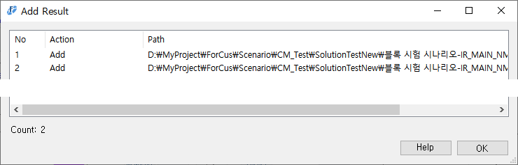
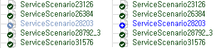
Add Result 창을 닫으면 Solution View Tree 에 NotVersioned 였던 파일이 Added 상태로 바뀐것을 확인 할 수 있습니다.
* Solution View, File View 트리에서 NotVersioned 또는 Ignore 항목을 선택하고 마우스 오른 버튼을 눌러 팝업되는 메뉴에서 파일 한개를 바로 Added 할 수 있습니다.
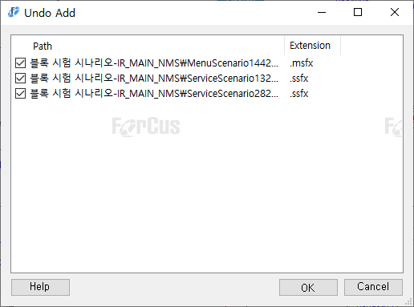
List : Added 된 파일이 대상이며 원래 파일 상태로 되돌아 갑니다.
* Added 파일이 없는 경우는 빈 화면에 OK 버튼이 비 활성화 상태가 됩니다.
- 선택한 파일을 형상관리 제외 파일로 설정합니다.
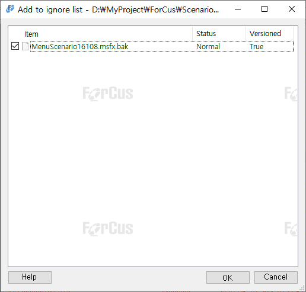
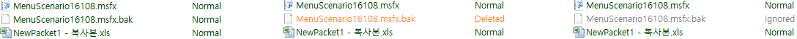
형상관리 중인 Normal 파일을 Add Ignore 하여 형상관리에서 SVN Delete 처리 하여 상태가 Deleted 로 바뀐 상태 인데 Commit 을 해야 Ignored 로 바뀜니다.
+ 파일이 삭제 되지는 않고 형상관리 에서만 빠짐니다.
- Ignored 상태의 파일을 해제 합니다.
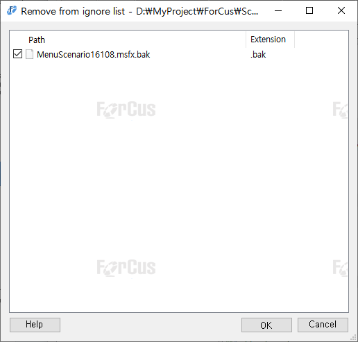
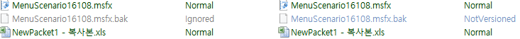
Ignored 상태의 파일을 해제하면 NotVersioned 상태로 바뀌며 Commit은 필요 없습니다.
- 리본 메뉴 CM > Subversion(SVN) > Settings의 Global ignore pattern 과 Add Ignore로 추가한 Ignored 리스트를 볼수 있습니다.
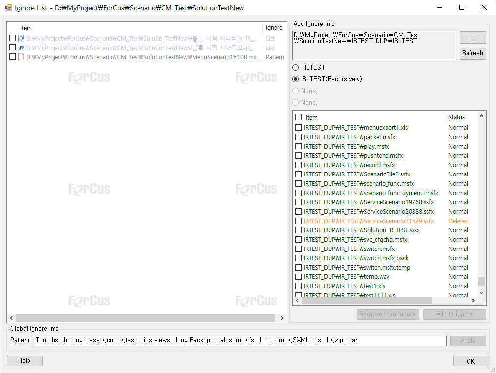
List : Ignore 컬럼에서 List(Add Ignore), Pattern(Global ignore pttern) 을 확인 할 수 있습니다.
+ 리스트에서 체크 박스를 클릭하면 선택한 항목을 Remove Ignore 할 수 있습니다.
Add Ignore Info : 리스트에서 항목의 체크 박스를 체크한 항목들을 리스팅 하고 Remove Ignore 하거나 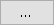
단, SCE에서 오픈한 솔루션 디렉토리 또는 하위의 디렉토리 또는 파일을 선택해야 합니다.
형상관리 중인 파일을 Add Ignore 처리는 Commit을 해야 적용되며 그렇지 않으면 Deleted 상태이다.
옵션 버튼은 위에서 부터 순서 대로 다음과 같이 해당되는 항목들을 찾습니다.
None : 선택한 디렉토리내의 모든 디렉토리와 파일들을 리스팅
None : 선택한 디렉토리와 그 하위의 모든 디렉토리와 파일들을 리스팅.
None : 선택한 파일과 같은 디렉토리 내에서 선택한 파일과 확장자가 같은 파일들을 리스팅
None : 선택한 파일과 같은 디렉토리와 그 하위의 모든 디렉토리에서 선택한 파일과 확장자가 같은 파일들을 리스팅.
Global ignore Info : 패턴을 편집하고 Apply 또는 OK 버튼을 누르면 패턴이 적용 됩니다.
- SVN 항목의 상태를 이전 상태로 되돌립니다.
Deleted 파일은 이전 상태인 Normal, Modified, Add 등으로 바뀝니다.
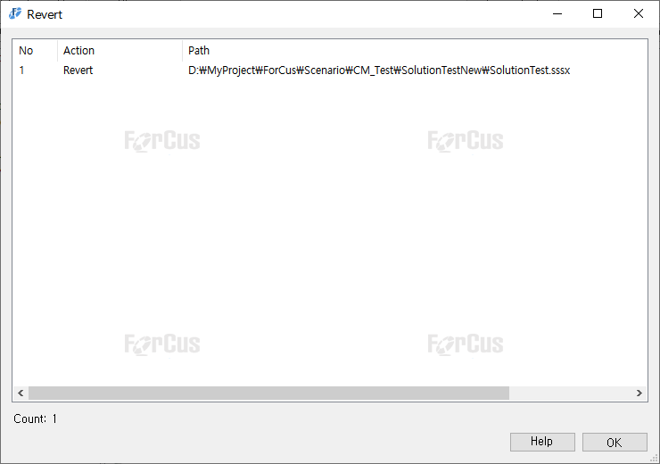
- 미 지원
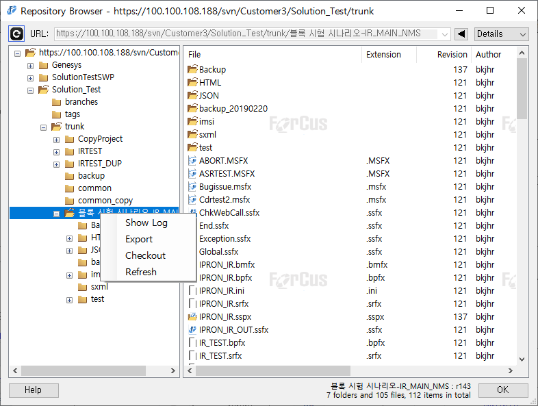
: 화면 갱신 버튼 입니다.(F5 키, Popup Menu > Refresh)
URL : 현재 선택되어 있는 저장소 주소 경로 입니다.
: 현재 경로에서 상위로 이동 버튼 입니다.
Details : 항목 들을 리스팅 할 레이아웃을 선택 합니다.
Tree : 저장소에 업로드 된 형상관리 시나리오 트리 입니다.
- 위 그림에서 Genesys, SolutionTestSWP, Solution_Test 는 Working copy의 솔루션 디렉토리와 이름이 같습니다.
- 각 솔루션 디렉토리 하위에 branches, tags, trunk 기본 디렉토리가 있습니다.
- trunk 디렉토리는 메인 개발 디렉토리 이며 시나리오 Import시에 Repository 주소 끝에 /trunk 로 Import 하며 이 디렉토리 하위에는 로컬의 형상관리 디렉토리 Root 하위에 있는 디렉토리와 파일들이 있습니다.
- Solution_Test > trunk 디렉토리 하위의 CopyProject, IRTEST, IRTEST_DUP, 블록 시험 시나리오-IR_MAIN_NMS 디렉토리는 프로젝트 이며, 나머지 디렉토리는 공통 디렉토리 입니다.
List : 선택한 저장소 경로 하위의 디렉토리 및 파일을 리스팅 합니다.
- File : 디렉토리와 파일 이름 입니다.
- Extension : 파일인 경우 파일 확장자 입니다.
- Revision : 디렉토리 또는 파일이 Commit 시에 부여된 관리 번호 입니다.
- Author : Commit 한 SVN 계정 입니다.
- Size : 파일인 경우 파일 사이즈 입니다.
- Date : Commit 된 날자/시간 입니다.
- Lock : 파일인 경우 파일에 락이 걸려 있는지 표시 합니다.
- Lock comment : 파일에 락을 걸 때 입력한 메시지 입니다.
Popup Menu : 디렉토리와 파일항목에서 마우스 오른 버튼을 누르면 팝업됩니다.
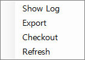
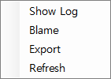
[디렉토리 팝업 메뉴] [파일 팝업 메뉴]
- 선택한 디렉토리 또는 파일을 Revision 정보 없이 로컬 디렉토리에 다운로드 합니다.
URL of remote repository : Export 할 Repository URL 주소를 입력 합니다.
Export directory : Export 받을 로컬 디렉토리를 입력(선택) 합니다.
Revision : Export 할 Revision을 선택합니다.
Export는 형상관리 정보가 없기 때문에 .svn 디렉토리가 없습니다.
- 선택한 디렉토리를 로컬에 Repository 정보를 포함하여 다운로드 합니다.
+ Checkout 받은 디렉토리에 .svn 이라는 디렉토리가 생성되는데 여기에 SVN 형상관리 정보가 모두 들어있으므로 이 폴더를 삭제하면 형상관리가 안됩니다.
URL of remote repository : Checkout 할 Repository URL 주소를 입력 합니다.(솔루션 시나리오를 모두 받을 때는 /trunk 에서 체크 아웃 합니다.)
Checkout directory : Checkout 받을 로컬 디렉토리를 입력(선택) 합니다.(기존에 Checkout 받지 않은 빈 디렉토리를 선택 하세요)
Revision : Checkout 할 Revision을 선택합니다.
빈 디렉토리가 아닌 경우 경고 창이 팝업 됩니다.
HEAD Revison:144 이고 4286개 가 Checkout 되었습니다.
.svn 디렉토리와 솔루션에 소속된 디렉토리 및 파일이 Checkout 되었습니다.
- Repository Browser 화면을 갱신 합니다.
- 형상관리 사용 시 충돌이 자주 발생 한다면 뭔가 잘 못 사용하고 있을 수 있습니다.
+ 형상관리 중인 디렉토리나 파일의 이름 변경, 삭제 시 에 다른 사용자는 CheckOut을 다시 받아야 할 수 도 있습니다.
+ 윈도우 탐색기에서 형상관리 중인 디렉토리, 파일을 삭제, 이름 변경 등을 하면 Repository리는 변경이 안되기 때문에 Repository Browser등을 통해서 에서 따로 처리 해 주어야 합니다.
* 형상관리 중인 디렉토리, 파일의 삭제, 이름 변경등은 신중히 해야 하며 같은 시나리오를 개발 중인 개발자들도 해당 항목을 확인하고 처리 해야 합니다.
- 형상관리 충돌 원인 및 해결
• 원인
- 형상관리 중인 디렉토리를 SVN Delete 하고 같은 이름으로 디렉토리를 만들어 Commit 한 상태에서 다른 사람이 Update 받을 때 tree conflict 발생
해결 : 해당 디렉토리를 삭제하고 SVN Update 합니다.
• 원인
- 동일한 파일을 각각의 개발자가 수정하고 어는 한 사람이 커밋하고 나중에 다른 사람이 커밋하는 경우 발생
해결 : 수정한 파일을 백업하고 SVN Update한 후에 수정한 파일을 참고 하여 파일을 편집 하고 커밋합니다.